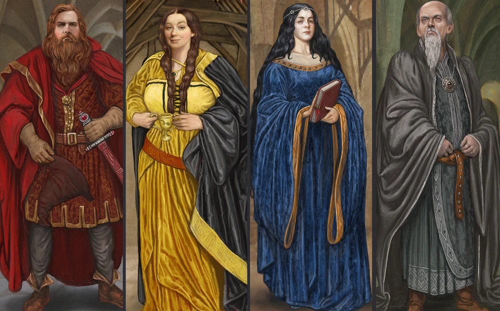
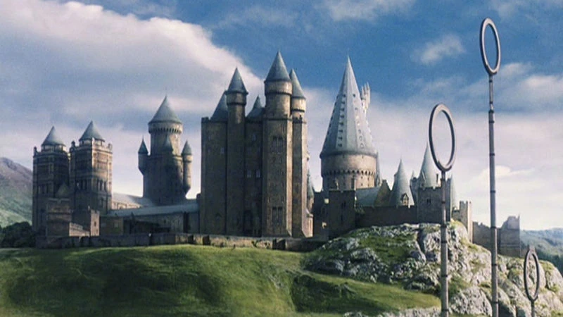
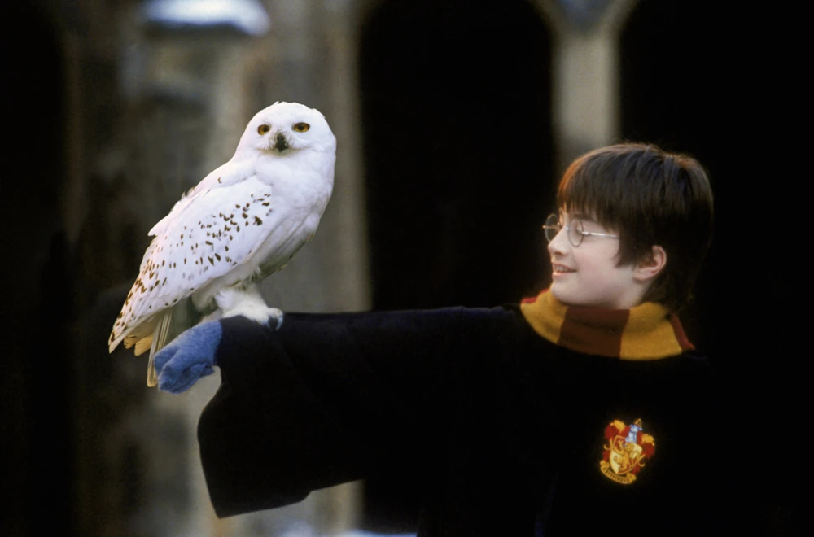
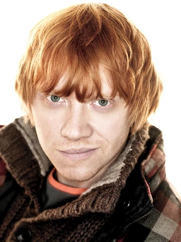

Hogwarts Houses
The Hogwarts School of Witchcraft and Wizardry is divided into four houses, each representing different values and characteristics. Every student is sorted into one of these houses, each contributing to the unique environment of Hogwarts.
Our College Campus
Gryffindor
Gryffindor values bravery, courage, and determination. The house was founded by Godric Gryffindor and is represented by a lion. Its colors are red and gold. Students in Gryffindor are known for their daring and adventurous spirit.
The common room is located in Gryffindor Tower and is guarded by the Fat Lady. Famous members include Harry Potter, Hermione Granger, and Albus Dumbledore. The house motto is "Fortune favors the bold."
Hufflepuff
Hufflepuff values loyalty, patience, and hard work. The house was founded by Helga Hufflepuff and is represented by a badger. Its colors are yellow and black. Students in Hufflepuff are known for their kindness and dedication to equality.
The common room is located near the kitchens and has a warm, welcoming atmosphere. Famous members include Cedric Diggory and Nymphadora Tonks. Hufflepuff students are known for their strong work ethic and compassion.
Ravenclaw
Ravenclaw values intelligence, wisdom, and creativity. The house was founded by Rowena Ravenclaw and is represented by an eagle. Its colors are blue and bronze. Students in Ravenclaw are highly intellectual and excel in academics.
The common room is located in a tower and requires answering a riddle to enter. Famous members include Luna Lovegood and Cho Chang. Ravenclaws are known for their love of knowledge and desire to understand the world around them.
Slytherin
Slytherin values ambition, cunning, and resourcefulness. The house was founded by Salazar Slytherin and is represented by a serpent. Its colors are green and silver. Slytherins are known for their leadership and ability to thrive in competitive environments.
The common room is located in the dungeons beneath the Black Lake, giving it a mysterious atmosphere. Famous members include Severus Snape, Draco Malfoy, and Tom Riddle. Slytherins are skilled in achieving their goals and often pursue power and influence.
Harry Potter
Harry Potter is one of the most famous members of Gryffindor House. His bravery and loyalty made him a natural fit for Gryffindor, where he became known for his courage in the face of danger. Harry played a key role in the defeat of Voldemort and his followers.
Hermione Granger
Hermione Granger, a brilliant and resourceful student, is another iconic Gryffindor member. Her intelligence and determination helped Harry in their many adventures. Known for her quick thinking and magical prowess, Hermione proved that brains could be just as powerful as bravery.
Ron Weasley
Ron Weasley is another notable Gryffindor student. Loyal and brave, he was one of Harry Potter's best friends and played a crucial role in the fight against dark forces. Ron's loyalty and friendship were unwavering, and he became a key figure in the defeat of Voldemort.